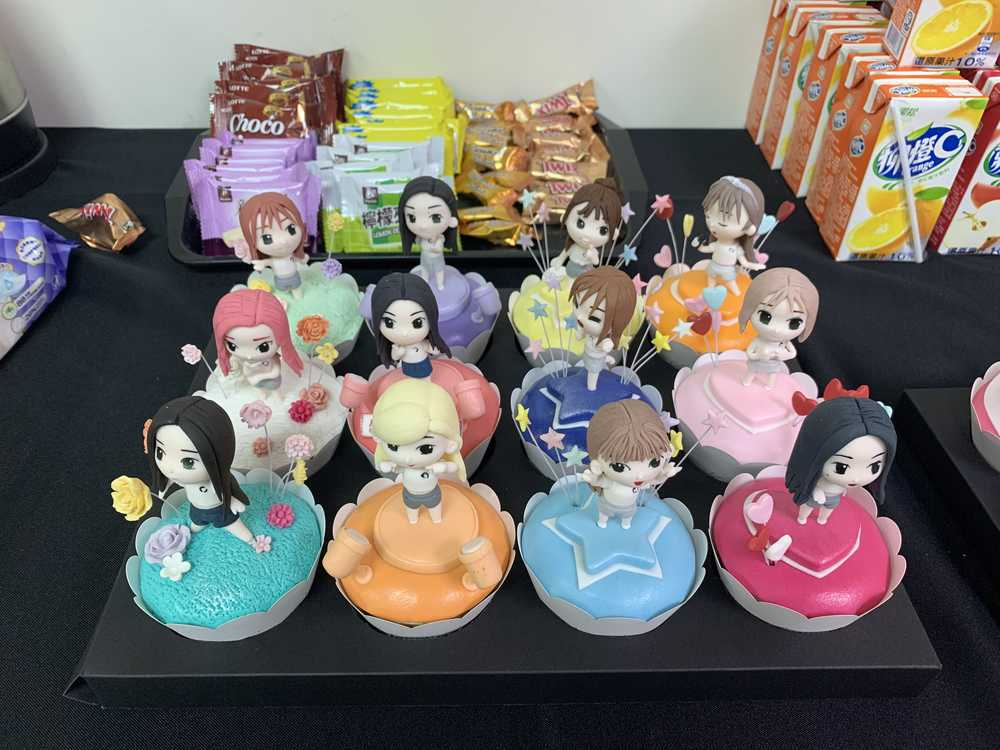

今日も
せかいのWIZ*ONEにあえて
そうぞうすることにも うれしいです。
오늘도 위즈원을 만날 생각에 너무 기뻐요><

어제 망고빙수도 먹구 망고도 사구ㅎㅎ
무엇보다도 제가 좋아하는 누가크래커가 케이터링에 있어서 행복했답니다 ㅋㅋㅋㅋㅋ
망고가 진짜 달더라구요!!!
위즈원도 음식도 나를 설레게 하니까
정말 심장이 하나로도 모자라네요..
昨日、マンゴー🥭かき氷もたべて🍧マンゴーも買って
チェヨンがすきなヌガークレカ？も食べられてしあわせかった！
WIZ*ONEも食べ物も
チェヨンをドキドキするように💓作って
心臓が足りないです。
がんばります。
오늘도 아주 지구 끝까지 달려볼게요:)